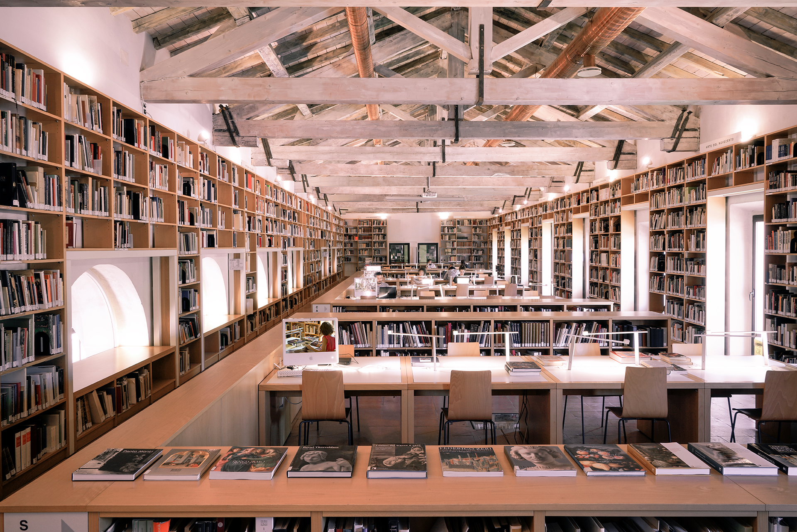

La storia umana del più grande archivio fotografico privato al mondo
keyboard_arrow_down
Find out more
Introduction

Have you ever wondered what the history of a photographic archive is?
Most probably it is the story of the humans who contributed to its creation and whose works have been catalogued. It will be the story of the men who travelled, studied and met each other to create those works.
And, in the end, it will undoubtedly be the story of the human being who made it all possible: Federico Zeri. Fototeca Zeri is the product of his studies in art history and at the same time the result of a broader vision, an invaluable resource for art history and photography scholars.
Zeri Photo Archive through ARTchives' lens
For a first approach to the Fototeca Zeri, ARTchives
as a collection of archival descriptions of art historians’
collections is a resource we cannot ignore.
And it is within ARTchives that our journey of discovery
into the human history of the Fototeca Zeri begins. Let's look at the data about the Fototeca Zeri inside ARTchives.
10
People and Organizations
17
Artists, schools, periods
11
Genres and themes
And what about the photographers?
keyboard_arrow_down
In search of the hidden photographers in Zeri Photo Archive
In order to understand what was missing in ARTchives, we decided to take a step further in our journey. Our first stop was Zeri & LODe. From this first research we were able to map a significant part of the photographers who contributed to the Photo Archive.
In this barchart we can see the ten first most relevant contributors in terms of quantity.
The first thing to notice is that the largest contributions come from anonymous sources. As if something must remain hidden in our investigation.
However, other entities and personalities have come to light. What kind of contribution are we talking about?
More than an Anonymous...
Our investigation meets a crossroads. We can glimpse two major groups of contributors to the Zeri Photo Archive. On the one hand, photographers and photo studios; on the other, large institutions among the most renowned in the world.
Driven by the desire to put a real face on these photographers, we leave institutions aside and focus on humans.
Beyond the lens
Unraveling the photographic library of human history for us is to see the faces that
were hidden behind the lens of the camera. The people below
are some of the ones we were able to find back in Wikidata.
The geography of photographers
Behind the faces of these photographers there is a world to explore. The journey can continue, from the places where they were born to the cities where they lived, worked and took their photographs.
Tracing their steps from their home states to the cities that hosted their work, the relationships between these photographers came to the surface. Many have shared the same cities, the same places and their eyes have also seen the same landscapes.
We can see that the photographers whose photos ended in the Photo Zeri Archive mainly worked in Milan, Florence and Rome, with
a cluster comprehending the three of them.